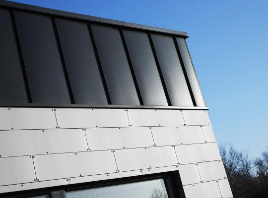
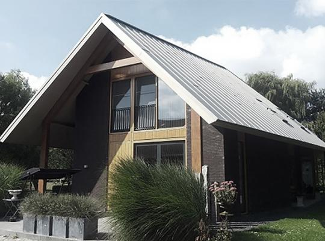
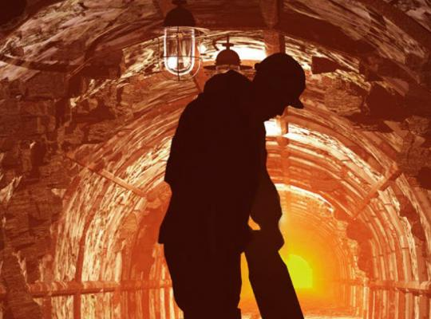

Artikler og tips & tricksFarvet zink: NedZink NUANCE25. sep 2020Hvordan måler man bæredygtigheden af forskellige byggematerialer?24. apr 2020Projekt i fokus: Station Square, Hermanus, Sydafrika17. mar 2020Zink og miljø12. feb 2020Projekt i fokus: Center for Maritim Uddannelse, Den Helder, Holland4. feb 2020Materialevalg: Boligejernes holdning20. jan 2020Byggeindustrien er en gigantisk byrde for klimaet20. jan 2020Dine gamle zinktagrender har en overraskende høj værdi17. jan 2020Zink og træ: Bæredygtig arkitektur6. dec 2019De fascinerende arkitektoniske kvaliteter af zink6. dec 2019Genanvendelse i et lukket kredsløb20. nov 2019Den naturlige patina vs. overfladebehandlede materialer20. nov 2019Risiko for hvidrust13. nov 2019Holdbarhed og miljøvenlighed23. sep 2019Støj fra zinktaget?18. sep 2019Hvad er den største forskel mellem blank zink og forpatineret zink?18. sep 2019Løber dine tagrender over?5. sep 2019Hvordan patinerer forpatineret og sort zink?12. aug 2019Valg af tagrende: zink, kobber eller aluminium? Bæredygtige og holdbare løsninger9. aug 2019Hvilke farver kan zink fås i?6. aug 2019Giv dit hjem stil og personlighed1. aug 2019Fem myter om bæredygtige byggematerialer1. aug 2019NG PRO – Tagrender i klassiske og moderne design1. aug 2019NG PRO byggeløsninger: Det sikre valg9. apr 2019100% naturlige byggematerialer12. mar 2019NG ZINK A/S bliver hovedsponsor i AC Horsens8. mar 2019Spil i overfladen19. feb 2019NG PRO: fordele og værdier17. dec 2018Er dine tagrender klar til vinteren?29. nov 2018Lækre kvalitetsmaterialer med spændende kontrastvirkninger21. nov 2018Farvet titaniumzink pryder den olympiske banegård10. okt 2018Hvor tit skal man udskifte sine tagrender?8. okt 2018Hvornår er det tid at udskifte tagrenderne?8. okt 2018Tagrender – en kort historie8. okt 2018Vedligeholdelse af zinktag og zinkfacade8. okt 2018Hvorfor zinktagbeklædning i stående falsesystemer?8. okt 2018Alt du skal vide, før du beslutter dig for at beklæde dit tag / facade med zink8. okt 2018Smukke mønstre: skab personlighed og stil med NG PRO27. aug 2018Patinering20. jul 2018Fem aspekter, der gør NG PRO anderledes end andre løsninger20. jul 2018Prælakeret aluminium i K2-overflade20. jul 2018NATO-hovedkvarter med et vidunderligt zinktag25. jun 2018Zink og cirkulær økonomi14. jun 2018Hvordan skal du vedligeholde din zinkfacade?11. jun 2018Hvordan skal du rense tagrender?11. jun 2018Sort zink vs. aluminium i antracit sort zink optik8. jun 2018Antracit sort zink - Drift og vedligeholdelse8. jun 2018Zink e-bog8. jun 2018Zink i 3D struktur8. jun 2018NG Zink A/S bliver brystsponsor for AC Horsens8. jun 2018Grå og sorte nuancer8. jun 2018Zinkfacade: stilrent design med ekstrem holdbarhed8. jun 2018Derfor spørger flere og flere boligejere efter NG Zinks byggeløsninger7. jun 2018Tag i zink, kobber og aluminium: Fordele og begrænsninger17. maj 2018Facadebeklædning i zink og aluminium på ældre og nye huse17. maj 2018